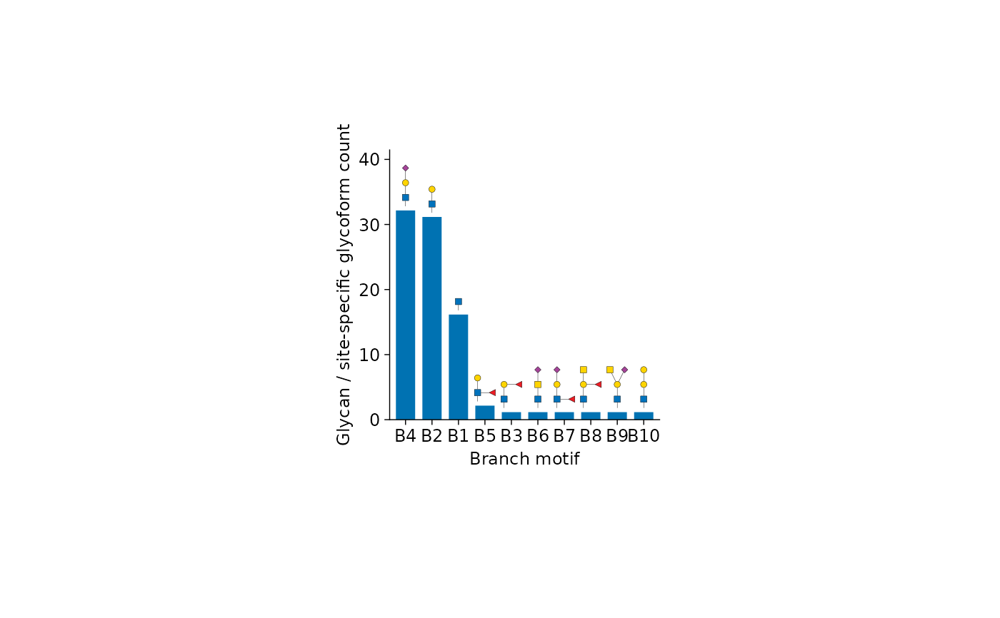

N-glycan core, type, and branch distributions
plot_n_core_pie.RdSummarize an N-glycan experiment across all samples, with glycan cartoons
drawn by glydraw::geom_glycan().
Usage
plot_n_core_pie(x, weight = "equal", ...)
plot_n_type_pie(x, weight = "equal", ...)
plot_n_branch_bar(x, weight = "equal", ...)Arguments
- x
A
glyexp::GlycomicSE()orglyexp::GlycoproteomicSE()withglycan_structurein its row annotations andglycan_type = "N"in its metadata. Legacyglyexp_experimentobjects are also supported.- weight
Either
"equal"(default) or"abundance". Equal weighting counts distinct glycan structures in glycomics, or distinct combinations ofprotein,protein_site, and glycan structure in glycoproteomics. Abundance weighting usesglydet::wsum()to sum the original linear-scale abundances over all rows and samples. Duplicate measurements contribute their summed abundance. Missing abundances are omitted; negative or infinite values and recorded non-raw scales are rejected.- ...
Common appearance options described in glyvis_plot_options. The default plot area is 50 by 50 mm. Pie annotations scale with the panel size; core labels are split across lines to avoid crowding.
Value
A tidyplot, also inheriting from ggplot. Its data contains
category, value, proportion, and glycan_structure. Proportions use
the total count or abundance of eligible N-glycoforms as the denominator.
Pies retain zero-valued categories in data and in their cartoon labels.
Details
plot_n_core_pie() separates core fucosylation and bisecting GlcNAc into
four combinations. Antennal fucose does not count as core fucose.
plot_n_type_pie() uses glydet::n_glycan_type() with
merge_mannose = TRUE, labelled oligomannose, hybrid, and complex.
Thus oligomannose includes both paucimannose and high-mannose glycans.
Type cartoons are representative structures, not complete definitions.
plot_n_branch_bar() extracts branch motifs through
glymotif::extract_branch_motif() and matches them with
glymotif::branch_motifs(), preserving the distinction between antennal
and bisecting GlcNAc. Each glycan or site-specific glycoform contributes
at most once to each branch type, even if it has repeated identical arms.
Different branch types can overlap, so bar proportions need not sum to one.
Cartoons above the bars show the extracted branches, without the core.
Bars are ordered from highest to lowest value and share one colour
(the first colour in palette, when supplied).
Pie annotations follow their sectors and move apart when crowded.
Bar limits reserve space for the actual cartoon heights.
Missing structures and structures without the N-glycan core are excluded with a warning. Invalid structure strings raise an error. Reducing-end alditol status is ignored for classification, but retained when identifying distinct glycoforms. Equal weighting counts annotated glycoforms regardless of assay missingness or zero abundance. No sample-wise normalization is applied. All-zero or entirely missing total abundance raises an error.
Examples
if (all(vapply(c("glydet", "glydraw", "glymotif", "glyparse", "glyrepr"),
requireNamespace, logical(1), quietly = TRUE))) {
plot_n_core_pie(glyexp::real_experiment2)
plot_n_type_pie(glyexp::real_experiment2, weight = "abundance")
plot_n_branch_bar(glyexp::real_experiment2)
}
#> Warning: Excluded 1 row with missing structures or without an N-glycan core.
#> Warning: Excluded 1 row with missing structures or without an N-glycan core.
#> Warning: Excluded 1 row with missing structures or without an N-glycan core.
